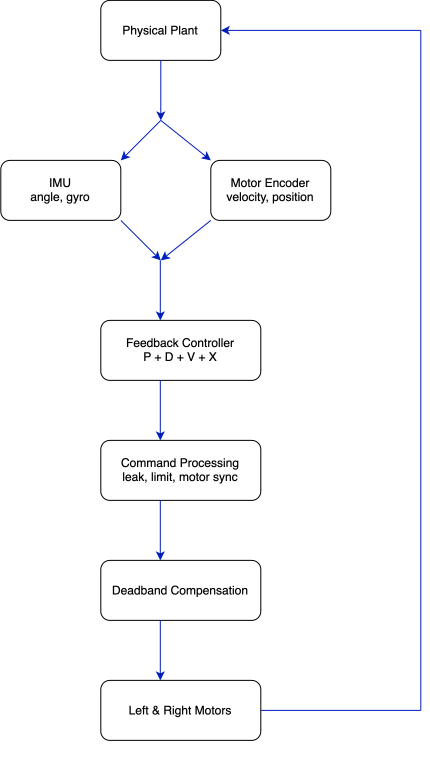

Platform
Pololu Balboa 32U4 robot with differential-drive motors, wheel encoders, and an onboard ATmega32U4 controller.
Embedded Controls • Robotics
A two-wheel balancing robot developed through iterative sensor calibration, feedback-controller design, encoder integration, and real-world disturbance testing.

Project Overview
The project combines IMU sensing, encoder feedback, and motor control to balance upright and recover from disturbances.
Like an inverted pendulum, the robot requires continuous correction to remain upright. The controller estimates tilt and fall rate, then moves the wheels beneath the center of mass.
The Pololu Balboa 32U4 supplies IMU measurements, wheel-encoder feedback, and onboard processing for the control loop.
Pololu Balboa 32U4 robot with differential-drive motors, wheel encoders, and an onboard ATmega32U4 controller.
IMU measurements provide tilt and angular velocity, while quadrature encoders track wheel speed and position.
A custom controller combines angle, angular velocity, wheel velocity, and wheel position feedback.
Demonstration
The final system balances autonomously, rejects disturbances, and transitions into balance through a kick-start sequence.
The robot maintains an upright position through continuous motor corrections based on IMU and encoder feedback.
The controller responds to a physical push by accelerating the wheels, recovering the robot’s angle, and returning toward its original position.
System Architecture
Sensor measurements are converted into corrective motor commands through a closed feedback loop.

Read angular velocity from the gyroscope and wheel displacement from the motor encoders.
Estimate the robot’s tilt angle and calculate wheel velocity and accumulated position.
Combine the feedback terms and apply the resulting command to the left and right motors.
Sensor Calibration
Stable control begins with an accurate upright reference.
Early tests showed a mismatch between the measured angle and the robot’s physical balance point, causing unnecessary motor corrections near upright.
Startup gyro calibration removes stationary bias, while an experimentally determined angle offset aligns the controller with the chassis’s actual center of mass.
Stationary gyroscope samples are averaged during startup and removed from future angular-rate measurements.
The reference angle is adjusted experimentally to match the robot’s actual center-of-mass balance point.
The controller activates only when the robot is within a safe starting range and shuts down after a large fall.
Feedback Controller
Four feedback terms regulate both body angle and wheel motion.
The proportional term generates a correction based on how far the robot is tilted away from its target angle.
The derivative term reacts to the speed of the fall and provides damping during rapid angular movement.
Encoder velocity helps the controller recognize translational movement and resist continued acceleration.
Accumulated encoder position gradually encourages the robot to return toward its original operating region.
Controller outputs are accumulated into the motor command so the robot can build sufficient response during a fall.
A small decay factor prevents accumulated motor commands from remaining indefinitely after the disturbance ends.
angleError = measuredAngle - targetAngle;
P = Kp * angleError;
D = -Kd * angularVelocity;
V = -Kv * wheelVelocity;
X = -Kx * wheelPosition;
motorCommand += P + D + V + X;
motorCommand *= commandLeak;
motorCommand = constrain(
motorCommand,
-motorLimit,
motorLimit
);Angle and angular-rate feedback stabilize rotation, while encoder velocity and position reduce drift and horizontal travel.
Accumulating the controller output builds a stronger response during a fall, while command leakage prevents that response from persisting indefinitely.
Embedded Implementation
The control loop runs at a fixed interval on the Balboa microcontroller.
Each cycle updates the IMU and encoder states, evaluates the controller, applies actuator compensation, and commands the motors. A consistent loop period keeps these calculations predictable.
void balanceController()
{
readIMU();
updateAngleEstimate();
readEncoderCounts();
updateWheelVelocity();
updateWheelPosition();
calculateFeedbackTerms();
updateMotorCommand();
applyDeadzoneCompensation();
synchronizeMotors();
setMotorSpeeds();
}Actuator Compensation
Low PWM commands could not overcome drivetrain friction, delaying corrective wheel motion.
Near upright, small controller outputs often fell inside the motor dead zone. Adding a minimum effective PWM offset allowed those commands to produce immediate motion without changing their direction.
Small control outputs do not move the wheels. The robot must develop a larger angle error before the motors begin responding, producing delayed and abrupt corrections.
Minimum effective PWM values allow the wheels to respond to smaller corrections, reducing delayed motor activation and improving balance near the upright position.
int compensateDeadzone(float command, int minimumPWM)
{
if (command > 0)
{
return command + minimumPWM;
}
if (command < 0)
{
return command - minimumPWM;
}
return 0;
}The offset follows the command direction, while a zero command remains zero. Separate left and right values compensate for drivetrain mismatch.
Kick Start
A button-triggered state machine uses a motor pulse and braking phase to raise the robot before handing control to the balance loop.
The motors first generate momentum, then brake near upright. Once the chassis enters the catch region, the normal balance controller takes over.
The robot generates momentum from its resting position, brakes near the upright region, and transitions into closed-loop balancing.
Controller Tuning
Controller gains were refined through repeated physical testing.
Proportional control alone chased the falling angle. Angular-rate feedback added damping, while encoder velocity and position terms reduced wheel acceleration and drift.
Serial logs of angle, gyro rate, wheel motion, feedback terms, and motor output exposed sign errors, saturation, and delayed response.
Each feedback term was tested to confirm that it commanded the wheels in the direction needed to oppose a fall.
Gains were increased or reduced based on oscillation, fall response, wheel acceleration, and recovery behavior.
Individual terms and the final motor command were limited to prevent a single measurement from dominating control.
Engineering Challenges
Early motor commands accelerated the robot in the direction of the fall. Feedback signs were verified individually and corrected through controlled testing.
IMU bias and chassis mass distribution caused the measured zero angle to differ from the physical balance point.
Small PWM commands were insufficient to move the motors. Minimum effective motor commands were added after the controller selected a direction.
Angle control alone could maintain balance while allowing the robot to travel. Encoder feedback was added to manage wheel velocity and position.
Differences between the left and right drivetrains could create turning during balancing. Encoder measurements were used to evaluate wheel synchronization.
Rapid falls could produce large feedback values. Constraints were introduced to keep motor commands within a controllable operating range.
Results
The completed system demonstrates stable balancing and practical disturbance recovery.
The robot can stand up through its kick-start sequence, maintain balance, and recover from moderate external pushes.
The project demonstrates embedded sensing, real-time feedback, actuator compensation, and experimental controller tuning on a physical unstable system.
Automatically activates when raised into the balancing region.
Continuously corrects angle and angular velocity using motor motion.
Responds to moderate external pushes and returns toward its operating position.
Project Files
The controller source code and supporting project materials are available through GitHub.